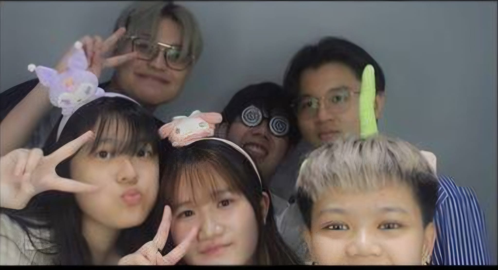

About Us
Welcome to DayLight, your one-stop shop for all KPOP merchandise. At DayLight, we believe in the power of music and the connection it fosters among fans worldwide. Our mission is to bring high-quality KPOP merchandise to fans everywhere, making it easier for you to celebrate and support your favorite artists.
Our Story
DayLight was founded in 2020 by a group of dedicated KPOP enthusiasts who saw a gap in the market for high-quality, authentic merchandise. From humble beginnings as a small online store, we have grown into a beloved destination for KPOP fans around the globe. Our journey has been driven by a passion for music and a commitment to customer satisfaction.
Our Products
We offer a wide range of products, including albums, light sticks, apparel, posters, and more. Each item is carefully selected to ensure authenticity and quality. We work closely with suppliers and manufacturers to bring you the latest and greatest in KPOP merchandise.
Our Values
- Quality: We only sell officially licensed merchandise to guarantee that you receive the best products.
- Customer Satisfaction: We are committed to providing excellent customer service and ensuring your shopping experience is seamless and enjoyable.
- Community: We strive to create a welcoming and supportive community for KPOP fans worldwide.
Meet the Team
Our team is composed of passionate individuals who are not only experts in their field but also avid KPOP fans. We understand the importance of connecting with fellow fans and providing products that enhance your fandom experience.
Contact Us
If you have any questions, feedback, or just want to share your love for KPOP, feel free to reach out to us. We love hearing from our customers and are always here to help.